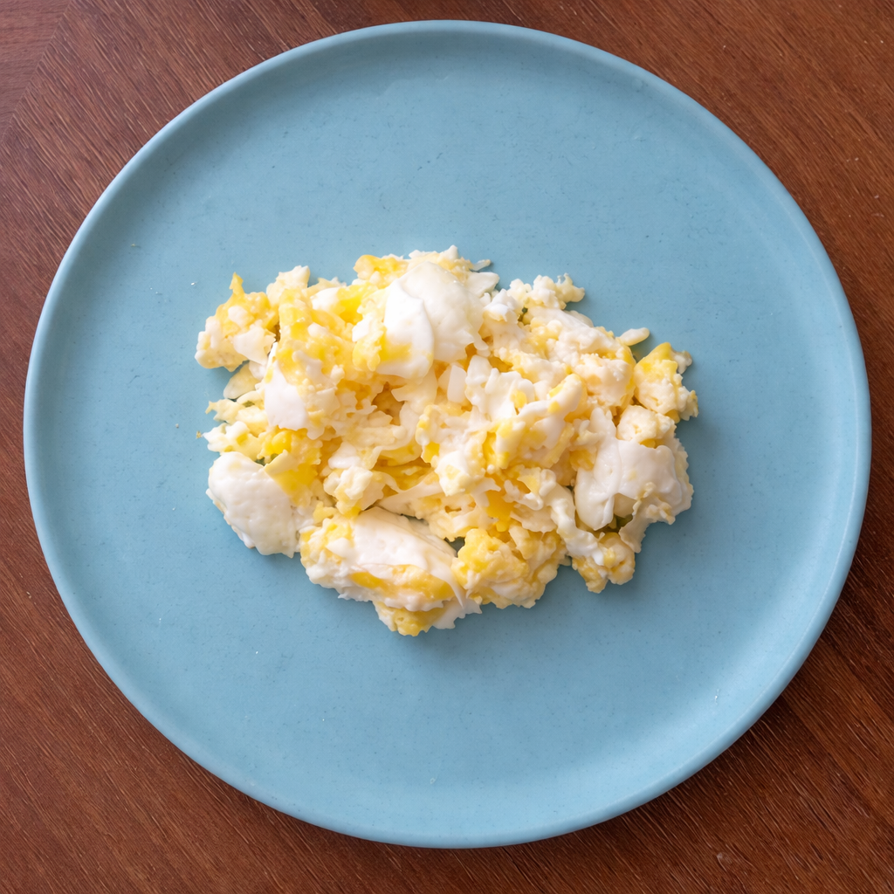

Ovo Mexido
Cremoso e macio. O acompanhamento perfeito para o café da manhã!
Ingredientes
- 2 ovos frescos
- 1 colher de sopa de manteiga (em temperatura ambiente)
- Sal a gosto
- Salsinha ou cebolinha picada (opcional)
Modo de Preparo
- 1 Bata os ovos em uma tigela com sal até ficar homogêneo
- 2 Corte a manteiga em cubos pequenos — vai ajudar a criar cremosidade
- 3 Coloque a frigideira em fogo baixo (muito importante!)
- 4 Adicione os ovos batidos e mexa constantemente com uma espátula de silicone ou madeira
- 5 Mantenha o movimento: vá raspando o fundo e as laterais, formando "dobradinhas"
- 6 Quando os ovos estiverem quase no ponto (ainda molinhos), retire do fogo
- 7 Junte os cubos de manteiga e mexa até derreter e incorporar — isso dá cremosidade!
- 8 Polvilhe salsinha, sirva em prato aquecido e coma imediatamente
💡 Dicas do Chef
- O segredo é fogo baixo: fogo alto = ovos secos e borrachudos. Fogo baixo = cremosos
- Tire do fogo antes do ponto: ovos continuam cozinhando mesmo fora do fogo
- Manteiga fria no final: é o truque profissional para cremosidade extra
- Não use garfo: espátula de silicone é melhor para criar textura
- Variação cremosa: adicione 1 colher de sopa de cream cheese no final para ficar ainda mais aveludado
- Servir: ovo mexido não espera! Sirva em prato aquecido para não esfriar rápido